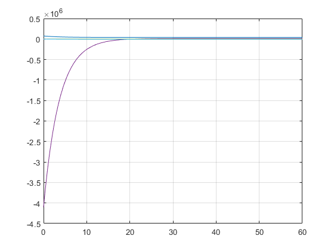

normalize
Linear coordinate transformation of the variables of a dmss model.
Contents
Syntax
sys = normalize(sys,stateCurrentRange, stateTargetRange, inputCurrentRange, inputTargetRange, algebraicCurrentRange, algebraicTargetRange) Linear coordinate transformation of the variables (states x, inputs u, algebraic variables y) of a dmss model, based of current and target ranges, parse as matrices where the first column is the lower limit and the second column is the upper limit. The rows correspond to the different variables xi, ui and yi.
[sys, stateOffset, stateSlope, inputOffset, inputSlope, algebraicOffset, algebraicSlope] = normalize(sys,stateCurrentRange, stateTargetRange, inputCurrentRange, inputTargetRange, algebraicCurrentRange, algebraicTargetRange) Additional outputs with information of the offsets and slopes of the linear coordinate transformation.
Examples
The following set of equations describe a simple HVAC system
Eq = ["9.03*11.33*3.4*1.225*xp1 - y4 - y2 = 0";... "9.03*11.33*3.4*1.225*xp2 - y3 = 0";... "x1 - 1006*y1 - 2501*10^3*x2 - 1860*x2*y1 = 0";... "y2 + u1*x1 - 1006*u1*u2 - 2501*10^3*u1*u3 - 1860*u1*u2*u3 = 0";... "y3 - u1*u3 + u1*x2 = 0";... "y4 + (2*(9.03+11.33)*3.4 + 9.03*11.33*3)*u4 - (2*(9.03+11.33)*3.4 + 9.03*11.33*3)*y1 = 0"];
which can be converted into a continuous-time dmss model by
sys = sym2dmss(Eq, 0)
Reduced by 5 column(s) and 0 equation(s) with trivial Reduction due to duplications.
sys =
dmss with properties:
H: [1×1 hyCPN1]
n: 2
m: 4
p: 4
outputIndex: [1×1 struct]
nEq: 6
stateName: [0×0 string]
stateUnit: [0×0 string]
algebraicName: [0×0 string]
algebraicUnit: [0×0 string]
inputName: [0×0 string]
inputUnit: [0×0 string]
ts: 0
which serves as an example system.
The model can variables can be scaled e.g. to values between -1 and 1. Therefore the current and target ranges of the different variables need to be defined. If a variable shouldn't be scaled the current and target ranges must be the same. Also it is important that lower and upper limit are not equal, e.g. [0, 0]. If a whole variable type shouldn't be scaled, in this example the inputs, the matrices can be left empty.
stateCurrentRange = [0, 1e5; 0, 0.025]; stateTargetRange = [-1 1; -1 1]; algebraicCurrentRange = [-20, 50; -10e6, 10e6; -1, 1; -1e5, 1e5]; algebraicTargetRange = [-1 1; -1 1; -1 1; -1 1]; inputCurrentRange = []; inputTargetRange = []; [sysNorm, stateOffset, stateSlope, inputOffset, inputSlope, algebraicOffset, algebraicSlope] = normalize(sys,stateCurrentRange, stateTargetRange, inputCurrentRange, inputTargetRange, algebraicCurrentRange, algebraicTargetRange);
Now the system can be simulated (keeping the slopes and offsets in mind for the initial states)
t = [0, 60]; x0 = ([75000; 0.018] - stateOffset')./stateSlope'; u = [150/1.225, 18, 0.01, 32] .* ones(length(t),1); rng(100) u = u .* (0.9 + rand(size(u))/10); simout = dmsim(sysNorm, x0, t, u);
Seperation in 1 subset(s) with 6 subproblem(s), from which 6 are explicit solvable.
The results can be plotted by accessing the properties of the simulation object
figure() plot(simout.tsim, simout.x) hold on plot(simout.tsim, simout.y) grid on hold off

The signals can be scaled back by simply multiplying with the slope and adding the offset.
x = simout.x.*stateSlope+stateOffset; y = simout.y.*algebraicSlope+algebraicOffset; figure() plot(simout.tsim, x) hold on plot(simout.tsim, y) grid on hold off
References
See also
dmss, dmsim, sym2dmss, replaceSymbolicParameters
Author(s): Torben Warnecke